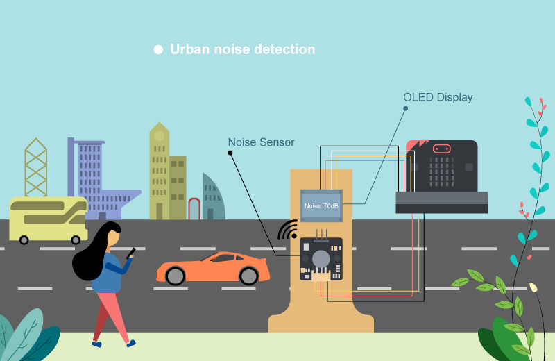
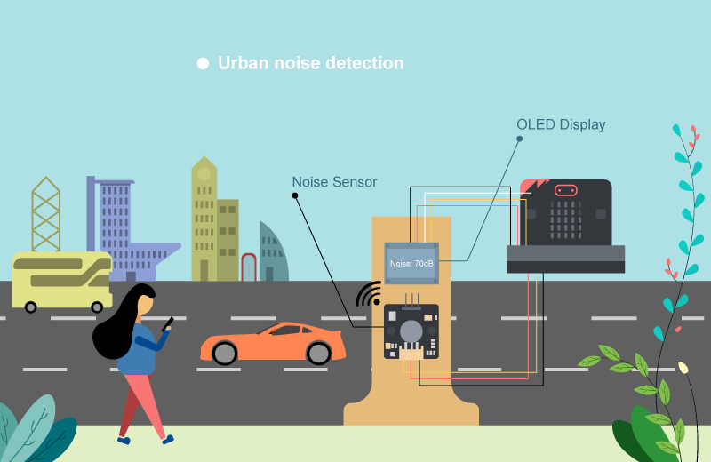
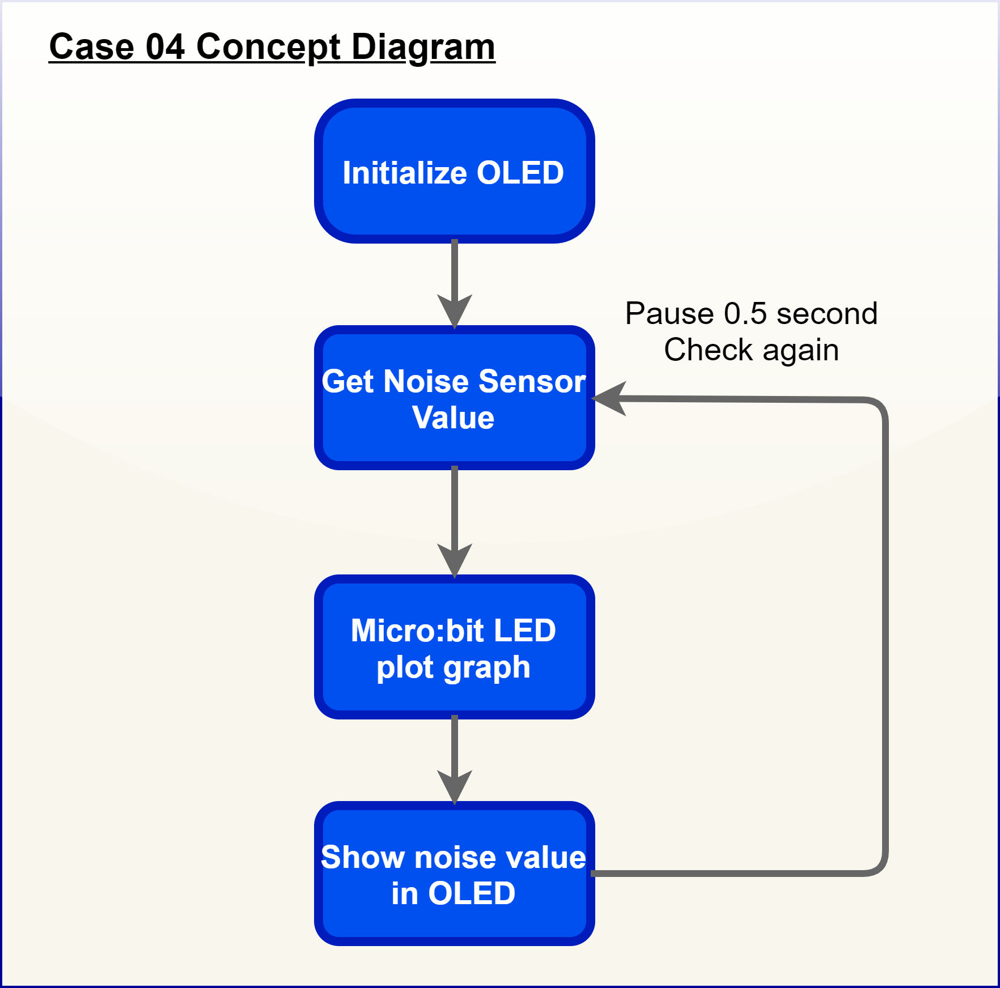
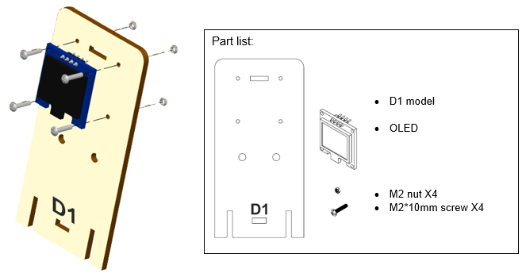
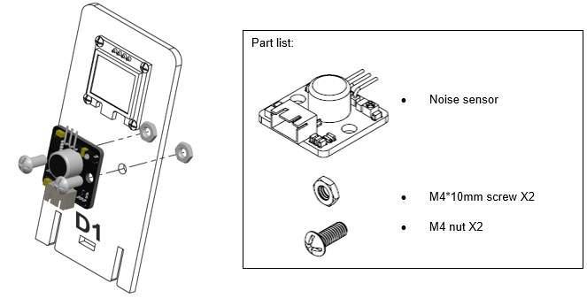
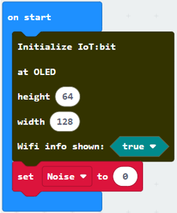
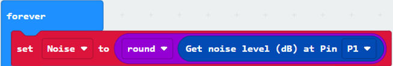

13. Case 04: Urban noise detection¶
Level:  

13.1. Goal¶
Make a noise detection point to detect the noise volume near the roadside using noise sensor.
13.2. Background¶
What is urban noise detection?
It is a system to detect noise near the road as noise pollution caused by cars on the road seriously affect the living standard of people. By installing a monitor to detect the noise volume near the roadside can help engineer to gather noise information and find solution to solve the problem in the future.
Noise detection operation
The noise sensor can detect the volume in dB near the roadside and show the volume on the OLED. A bar graph of sound intensity will be shown on the micro:bit.

13.4. Assembly step¶
Step 1
Attach the OLED to D1 model with M2 * 10mm screws and nuts.

Step 2
Attach noise sensor to D1 model with M4 * 10mm screws and nuts.

Step 3
Put together all the cardboard parts (D1-D2).

Step 4
Assembly completed!

13.5. Hardware connect¶
Connect Noise Sensor to P1 port of IoT:bit
Extend the connection of OLED to I2C connection port of IoT:bit

13.6. Programming (MakeCode)¶
Step 1
Step 1. Initialize OLED screen and variable
Drag
Initialize OLED with width:128, height: 64toon startSet
Noiseto 0 fromvariables
Step 2. Show noise value on micro:bit LED
In block
forever. Setnoiseto roundget noise level (dB) at pin P1Drag
plot bar graph of …fromLedand draw variableNoiseinto the plotted value. Set value up to 100Drag
Pauseto the loop for wait for 0.5 second for next checking 
Step 3. Show the noise value on OLED screen
Snap
clear OLED displayfromOLEDto avoid overlapSnap
show stringto the loop and show value of the variableNoise
Full Solution
MakeCode: https://makecode.microbit.org/_WXXLErLTYEY9
You could also download the program from the following website:
13.7. Results¶
After initializing WiFi extension board and OLED, micro:bit will show a bar graph for the sound intensity in a city.


13.8. Think¶
Q1. How to make a notification if noise pollution problem is serious? i.e. showing red LED